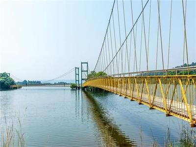

Laknavaram Lake
Laknavaram Lake is a beautiful lake located in Warangal, Telangana. Surrounded by lush forests and scenic hills, it is a popular destination for nature lovers and tourists. The lake was constructed by the Kakatiya dynasty and is known for its serene environment and suspension bridge.
Location: Warangal, Telangana, India
Ticket Price: INR 10 for Indian citizens, INR 100 for foreign nationals
Transportation: Accessible by road, well-connected by local buses and taxis.